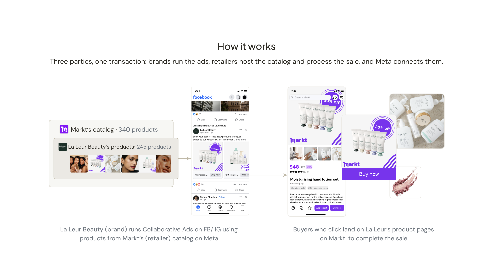
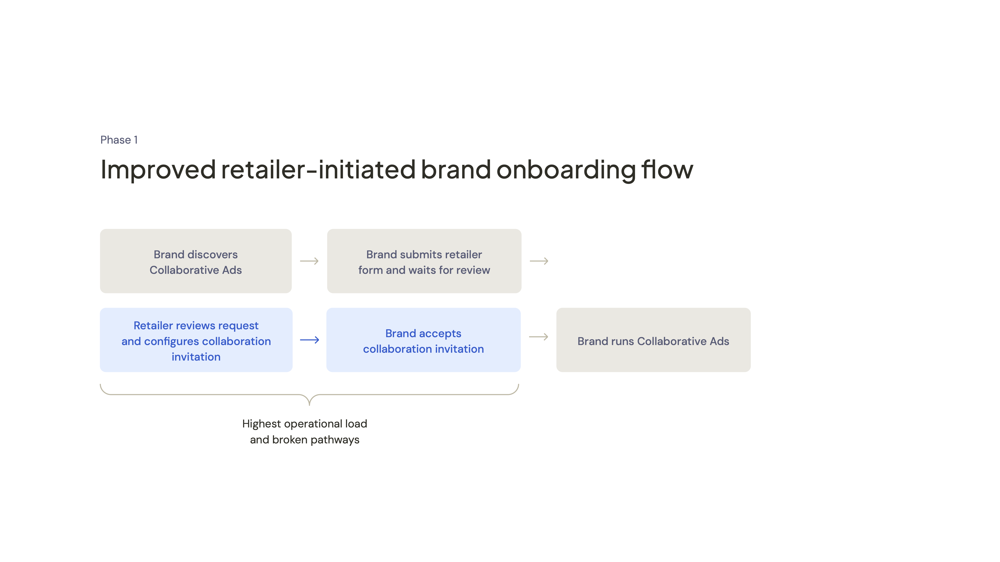
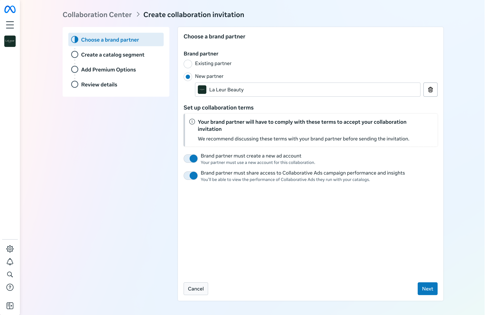
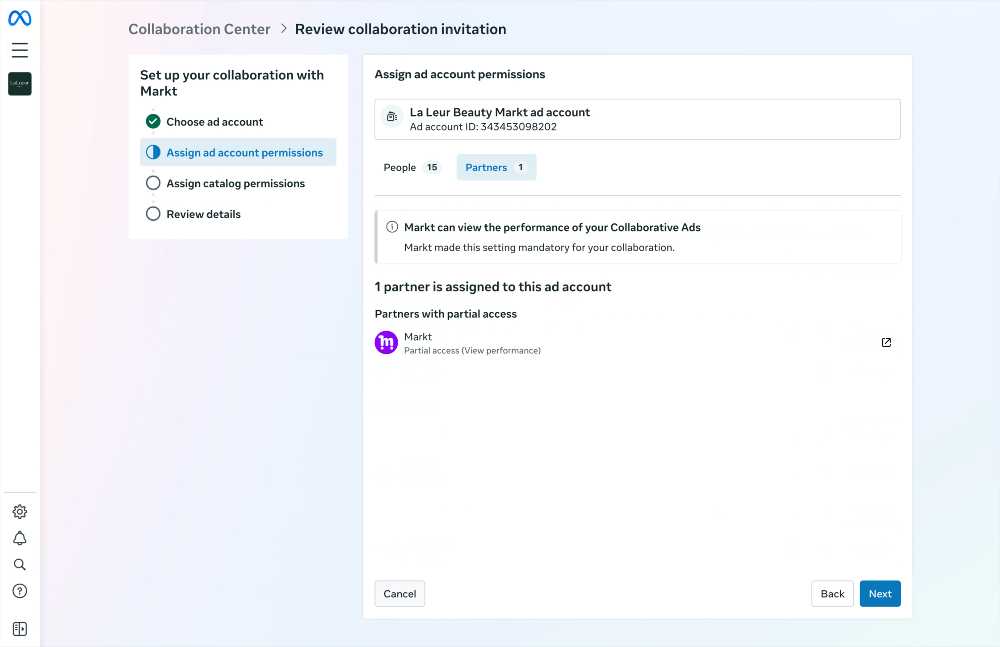
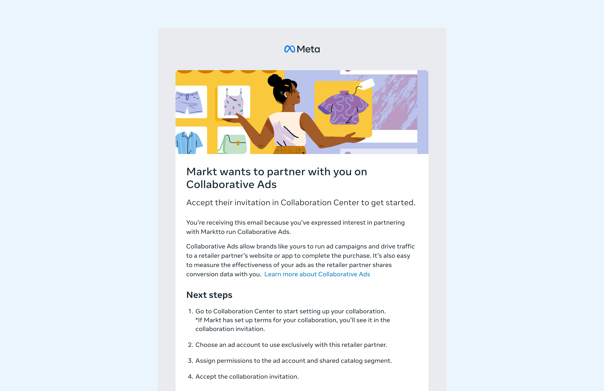
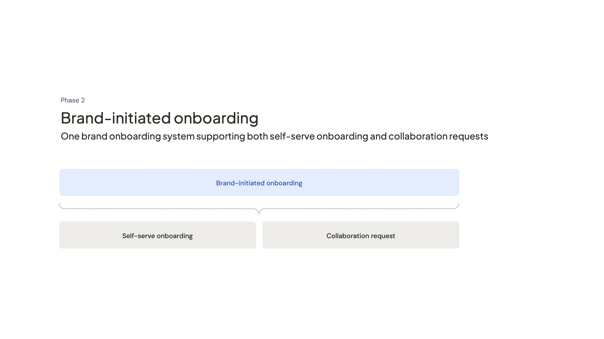
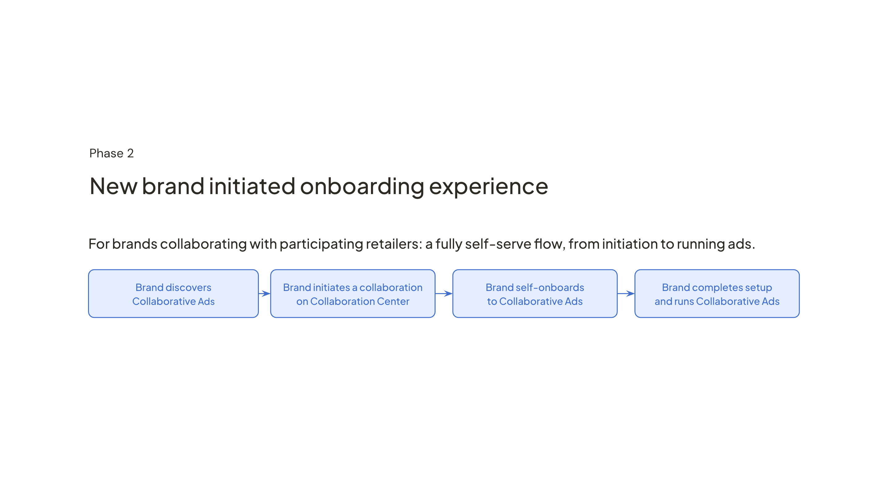
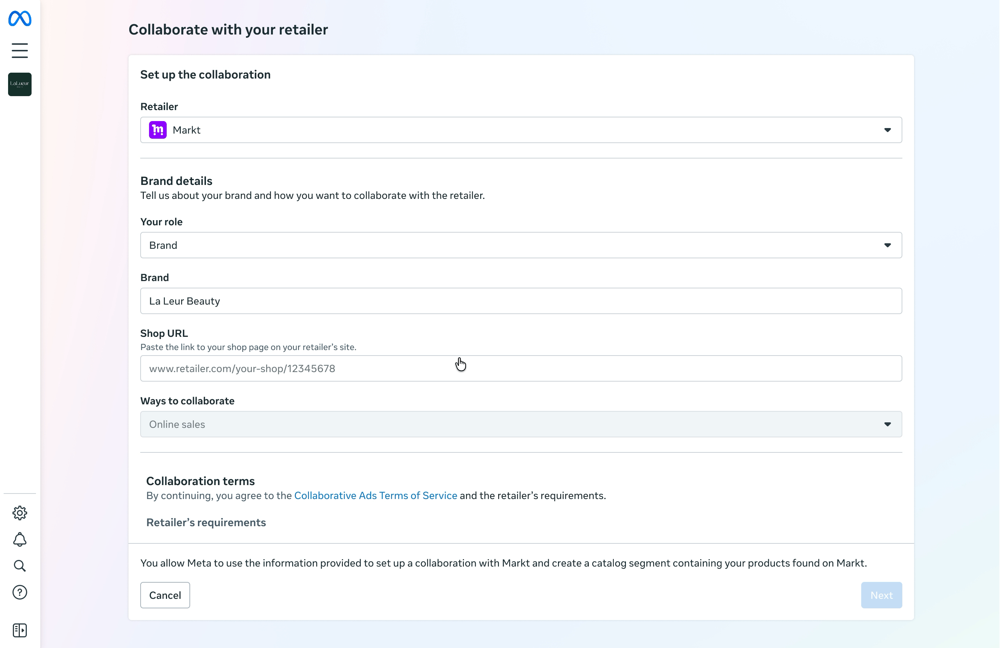

Collaborative Ads Brand Onboarding & Activation
A two-phase redesign that reduced retailer burden, rebuilt partner trust, and made brand-initiated onboarding possible.
Key contributions
- Pressure-tested the scoped Phase 1 direction before build began; audited retailer and brand flows, identified the highest-leverage friction, and aligned leadership on a more focused approach.
- Unified 7 separately scoped roadmap projects into one end-to-end workstream, revealing that one initiative was already solved by the proposed direction.
- Led the vision for brand-initiated onboarding across discovery, setup, and activation; partnered with PM and Engineering to shape the strategy and implementation path.
- Co-presented concepts to retailer partners and used their feedback to reshape the implementation strategy.
Role
Lead Product Designer
Team
1.25 CD, 1 PM, 9 Eng, 1 DS, 1 PMM
Timeframe
11 months
Collaborative Ads ↗ lets brands run ads that direct buyers to their products sold through retailer websites and apps. Brands run the ads, retailers own the catalog and fulfil the sale, and Meta connects them.
Before a brand could advertise, a retailer had to send them a collaboration invitation. The deeper problem wasn't just friction; it was the incentive structure around onboarding: every new brand created more retailer work, so partners naturally gated access and prioritised their largest brands. Most brands only discovered Collaborative Ads when contacted, waited weeks for manual review, and still weren't ready to run ads after setup.
Phase 1 reduced retailer burden and rebuilt confidence in Collaborative Ads. Phase 2 shifted onboarding from a retailer-managed process to a brand-initiated one.

This project is under NDA. Screens shown here have shipped publicly. A deeper walkthrough is available on request.
Phase 1: Reducing retailer burden
When I joined the team, a direction had already been scoped. Before committing to implementation, I audited the retailer and brand experience, reviewed partner feedback, and formed a point of view on which friction mattered most to solve first.
The friction points were already known, the question was how to address them in a way that worked for both brands and retailers. I got leadership and team buy-in to revise the approach before build began, focusing Phase 1 on changes that reduced retailer effort, removed brand confusion, and fit within product and timeline constraints.
Retailers had collaboration requirements but no way to enforce them, so brands sent screenshots to prove compliance and waited for manual verification. At the same time, 80% of brands didn't know an invitation was waiting, and permissions were treated as secondary even though brands needed ad account and catalog segment access before they could run ads.
Together, these gaps made onboarding manual for retailers and left brands waiting weeks to complete setup.

Collaboration terms enforced end-to-end


No more manual invitation follow-ups

Automate where safe, hold where it matters


Ad account permissions, which give teams access to spend and billing, remain manually assigned. Catalog segment permissions, which give access to products, are auto-granted to anyone with ad account access.1
Results
- Onboarding completion rate increased by 13%.
- Retailers began actively promoting Collaborative Ads to more brands.
Phase 2: From retailer-led to brand-initiated
Phase 1 reduced retailer burden and rebuilt confidence in Collaborative Ads, but it didn’t change the underlying dependency: brands still needed a collaboration invitation from retailers before they could get started.
To scale brand acquisition, I led the vision for a less retailer-led journey across discovery, setup, and activation: brands could discover Collaborative Ads, initiate setup themselves, and get to their first campaign with much less retailer support.
The key tradeoff was where to build it. Retailer-owned brand portals were the natural discovery surface, but required partner engineering investment. Collaboration Center, Meta’s surface for managing brand <> retailer collaborations, had lower existing traffic but gave us full control and could scale independently. We shifted the primary implementation there.

Brand-initiated onboarding supported two completion paths: self-serve onboarding where retailers were ready to automate setup, and collaboration requests where review was still required. This walkthrough focuses on the self-serve path, where brands could complete setup without waiting for retailer review.

One entry point for all brands

Brands shouldn't need to understand which onboarding path each retailer supports. We designed one form that adapts based on retailer selection: self-serve onboarding where available, and a guided collaboration request where review is still required.
Real-time verification

Shop URL verification let brands prove they sold through a retailer without retailer review, turning a multi-week manual process into something that could happen in one session. Brands were more likely to know their shop URL than an internal retailer ID, and we could still extract the ID behind the scenes to verify the relationship automatically.
The approach required a deliberate security tradeoff. We worked through the risk with Legal and added mitigations, including masking private catalog data, before shipping.
A direct path to the first ad

36% of brands who completed onboarding never ran an ad. The Overview tab addressed that gap by providing a direct entry point to launch a Collaborative Ads campaign with defaults applied, alongside any remaining setup actions.
Results
- Our largest retailer made Collaborative Ads available to every brand on their platform for the first time.
- Increased weekly net-new brand onboarding by 54% after self-serve onboarding launched.
- Exceeded the daily revenue goal by ~17%.
- Self-serve onboarding launched with our largest retailer, with 4 more retailers implementing or committed to launch.
Key Takeaway
Phase 1 wasn't just about fixing friction. It reduced the operational burden that made retailers cautious about opening Collaborative Ads to more brands.
That trust created room for the larger structural change in Phase 2: brands could initiate onboarding themselves, while retailers kept the controls they needed. The biggest lesson was that in multi-party systems, trust is built by making the system easier for every party to participate in.